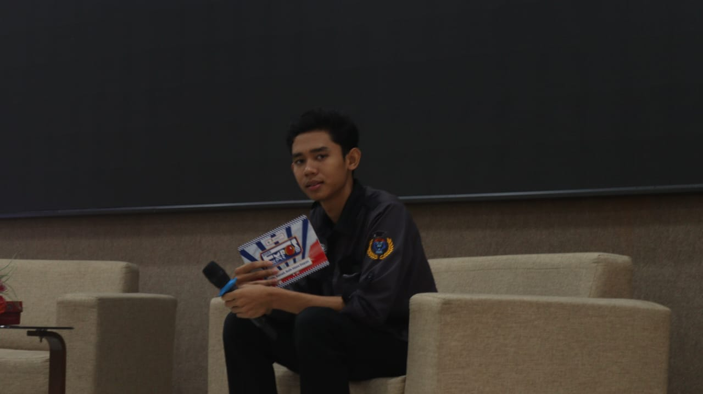
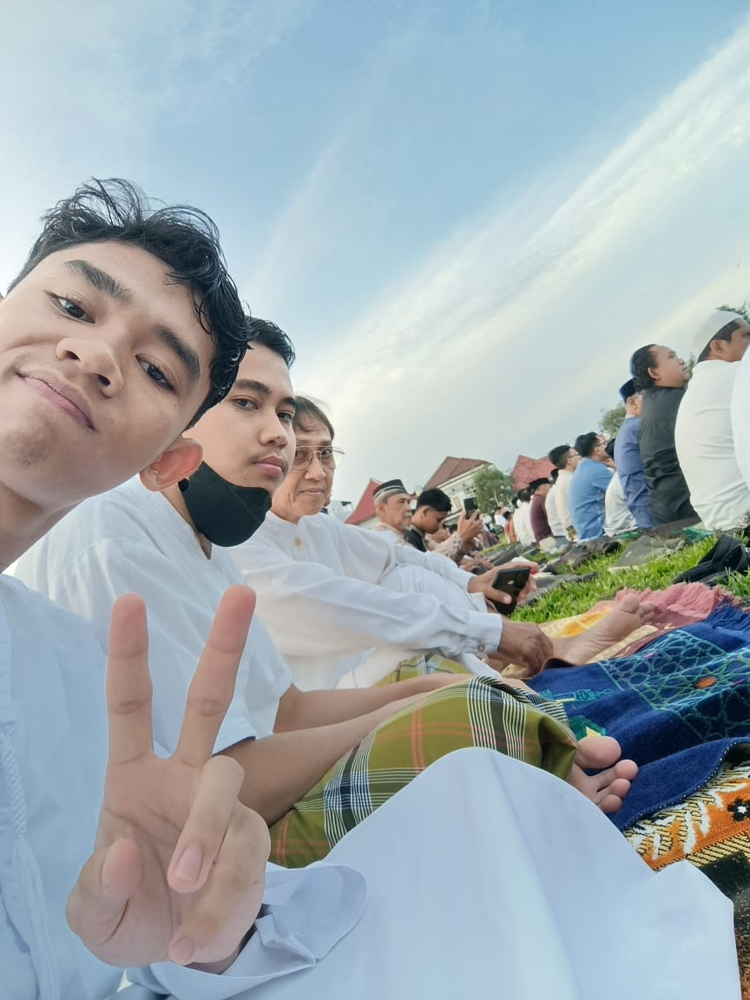

Hello!
Nama saya Nugroho Nur Cahyo, atau lebih akrab dipanggil Nugroho, Nugi, Nunu, atau dengan berbagai sebutan lainnya. Saya berasal dari Surakarta, namun saat ini tinggal di Rangkapan Jaya, Depok. Saat ini, saya adalah mahasiswa Teknik Informatika di Politeknik Negeri Jakarta.
Saya memiliki berbagai hobi yang menyenangkan, seperti sepak bola, fotografi, bernyanyi, dan tentu saja bermain game. Dalam hal kuliner, saya sangat mencintai bakso, yang bagi saya lebih dari sekadar makanan. Bakso adalah simbol kemakmuran dan kebersamaan, dengan bola-bola daging yang menggambarkan kekuatan hidup yang penuh kelezatan.
Sedikit Sapaan Dari Saya!
video ini ada hanya untuk mempermanis web ini ya ges ya, isinya cuma aku yang sedang memperkenalkan diriku, mulai dari lahir tahun berapa, umur saat ini, sekolah dimana hingga hobiku apa saja. Semoga video ini bisa menghibur, lol. Enjoy guys!
My Gallery!

